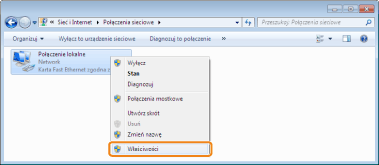
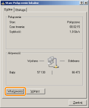
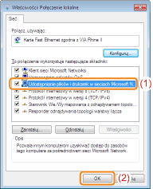

Przed konfiguracją serwera wydruku należy sprawdzić ustawienia środowiska sieciowego, wykonując następującą procedurę.
1
Wykonaj następującą procedurę.

W menu [Start] wybierz [Ustawienia] → [Połączenia sieciowe i telefoniczne].

W menu [Start] wybierz [Panel sterowania] i kliknij [Połączenia sieciowe i internetowe] → [Połączenia sieciowe].

W menu start [Start] wybierz [Panel sterowania] i kliknij [Wyświetl stan sieci i zadania] → [Zarządzaj połączeniami sieciowymi].


W menu start [Start] wybierz [Panel sterowania] i kliknij [Wyświetl stan sieci i zadania] → [Zmień ustawienia karty].

W menu [Start] wybierz [Panel sterowania] → [Połączenia sieciowe] → [Połączenie lokalne].

W menu [Start] wybierz [Panel sterowania], kliknij dwukrotnie [Centrum sieci i udostępniania], a następnie kliknij [Zarządzaj połączeniami sieciowymi].
2
Wyświetl okno dialogowe [Właściwości: Połączenie lokalne].
Kliknij prawym przyciskiem ikonę [Połączenie lokalne], następnie wybierz z menu podręcznego polecenie [Właściwości].

Kliknij [Właściwości].

 Jeśli wyświetlone zostanie okno dialogowe [Kontrola konta użytkownika] Jeśli wyświetlone zostanie okno dialogowe [Kontrola konta użytkownika]Kliknij [Tak] lub [Kontynuuj].
|
3
Upewnij się, czy wybrano opcję [Udostępnianie plików i drukarek w sieciach Microsoft Networks].
|
(1)
|
Upewnij się, czy zaznaczono pole wyboru [Udostępnianie plików i drukarek w sieciach Microsoft Networks].
(Jeśli pole wyboru nie jest zaznaczone, należy je zaznaczyć.)
|
|
(2)
|
Kliknij [OK].
|

|
UWAGA
|
|
Jeśli używasz systemu Windows XP
Nie można skonfigurować serwera wydruku z ustawieniami domyślnymi systemu operacyjnego (ustawienia bezpośrednio po instalacji).
Przed konfiguracją serwera wydruku uruchom [Kreator konfiguracji sieci], aby włączyć ustawienia udostępniania drukarki.
Więcej informacji na ten temat znajdziesz w Pomocy systemu Windows.
|